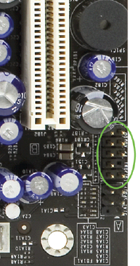
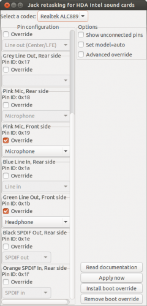
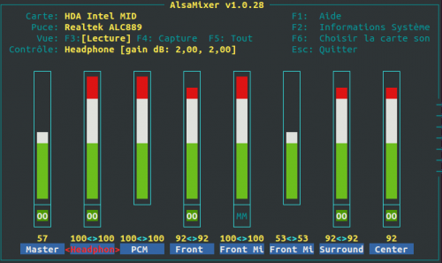

6 septembre 2015
Activer les prises audios du front panel sur Ubuntu
Il y a quelques mois, mon frère m'a donné son ancienne carte mère et l'a installé dans mon boitier.
Tout fonctionnais très bien sous Ubuntu, sauf les prises audios en façade (à savoir le Jack 3.5 vert et rose). J'ai décidé de me coller à ce problème.
- Vérifions d'abord la carte mère (EVGAP55 SLI-E655-KR), le connecteur CFPA (Control Front Panel Audio) est bien présent et connecté ;
[caption id="attachment_3639" align="alignright" width="199"]

Connecteur CFPA[/caption] - Allons dans le BIOS, ici pas de mention de front panel audio, juste "HD Audio" activé ou non pour l'ensemble du chipset audio ;
- Le problème ne semble pas matériel et après quelques recherches je découvre l'utilitaire hdajackretask qui permet de réassigner les prises jacks sur du matériel Intel HDA ;
- Installons donc cet utilitaire ainsi qu'alsamixer : sudo apt-get install alsa-utils alsa-tools alsa-tools-gui ;
- Lançons le : sudo hdajackretask (Il est aussi présent dans le menu Applications -> Son et vidéo) ;
- Pour le micro (Jack rose) : je coche Override pour "Pink Mic, Front Side, Pin ID: 0x19" ;
- Pour le casque (Jack vert) : je coche Override pour "Green Line Out, Front Side, Pin ID: 0x1b" et je sélectionne "Headphone" ;
- Le bouton "Apply now" ne fonctionnant pas, je clique sur "Install boot override" et redémarre Ubuntu ;
- Un léger son de grésillement se fait entendre au redémarrage, le casque fonctionne sur la prise !
- Je démarre alsamixer et ajuste le son de "Headphone" pour le mettre au maximum et appuie sur la touche "M" pour désactiver la sourdine.
- Il est possible d'enregistrer les paramètres en utilisant la commande : alsactl --file ~/.config/asound.state store
- Puis de la restaurer au démarrage avec : alsactl --file ~/.config/asound.state restore





Voilà, en espérant que ce tutoriel vous aura aidé à activer le Front Panel Audio, bien entendu la configuration des Pins peut changer selon le modèle de votre carte mère.
Commentaires 6